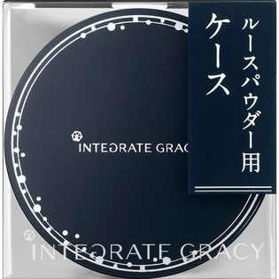
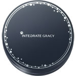

返回列表
产品名称：インテグレート グレイシィ ルースパウダー ケース

資生堂 インテグレート グレイシィ ルースパウダー ケース －
メーカー 資生堂
JANコード 4901872072873
商品の特徴
インテグレート グレイシィ ルースパウダー用ケースです。
別売りの入れ替え用ルースパウダー（レフィル）をケースに移してお使いください。（パフはレフィルにセットされています。）
成分・分量
－
用法及び用量
【ご使用方法】
●別売りの入れ替え用ルースパウダー（レフィル）をケースに移してお使いください。（パフはレフィルにセットされています。）
●入れ替え方法は、レフィルの袋裏面をお読みください。